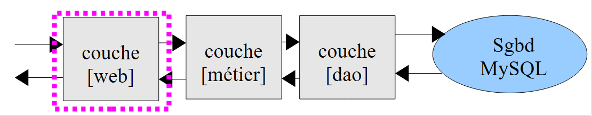

13. التمرين IMPOTS باستخدام XML
في هذا التمرين الذي تمت دراسته عدة مرات، يرسل الخادم النتائج إلى العميل في شكل تدفق XML.
13.1. الخادم (impots_05B_web)
تتميز خدمة الويب لحساب الضريبة التي تمت كتابتها سابقًا بهيكل متعدد الطبقات:
 |
في المثال السابق، كانت خدمة الويب ترسل إلى عملائها أحد السطرين التاليين:
هذا ليس مستندًا XML صحيح التكوين لأنه يفتقر إلى العلامة الجذرية. سترسل خدمة الويب الجديدة ردها بالشكل التالي:
أو
في كلتا الحالتين، يكون الرد مستند XML صحيح التكوين ويمكن استخدامه بواسطة الوحدة النمطية [simpleXML].
في المخطط ثلاثي الطبقات، يجب تعديل الطبقة [web] فقط. يصبح رمزها [impots_05B_web] كما يلي:
<?php
// طبقة الأعمال
require_once "impots_05_metier.php";
// إدارة الأخطاء
ini_set("display_errors", "off");
// رأس الصفحة UTF-8
header("Content-Type: text/plain; charset=utf-8");
// ------------------------------------------------------------------------------
// خدمة الويب الخاصة بالضرائب
// تعريف الثوابت
$HOTE = "localhost";
$PORT = 3306;
$BASE = "dbimpots";
$USER = "root";
$PWD = "";
// تم وضع البيانات اللازمة لحساب الضريبة في الجدول mysqL $TABLE
// التابعة لقاعدة البيانات $BASE. الجدول له البنية التالية
// حدود decimal(10,2)، coeffR decimal(6,2)، coeffN decimal(10,2)
// معلمات الأشخاص الخاضعين للضريبة (الحالة الاجتماعية، عدد الأبناء، الراتب السنوي)
// يتم إرسالها من قبل العميل بالصيغة params=الحالة الاجتماعية، عدد الأبناء، الراتب السنوي
// يتم إرسال النتائج (الحالة الاجتماعية، عدد الأبناء، الراتب السنوي، الضريبة المستحقة) إلى العميل
// بالشكل <ضريبة>ضريبة</ضريبة>
// أو في شكل <erreur>erreur</erreur>، إذا كانت المعلمات غير صالحة
// يتم استرداد الطبقة [métier] في الجلسة
session_start();
if (!isset($_SESSION['metier'])) {
// إنشاء مثيل لطبقة [dao] وطبقة [métier]
try {
$_SESSION['metier'] = new ImpotsMetier(new ImpotsDaoWithMySQL($HOTE, $PORT, $BASE, $USER, $PWD));
} catch (ImpotsException $ie) {
print "<reponse><erreur>Erreur : " . utf8_encode($ie->getMessage() . "</erreur></reponse>");
exit;
}
}
$metier = $_SESSION['metier'];
// يتم استرداد السطر المرسل من العميل
$params = utf8_encode(htmlspecialchars(strtolower(trim($_POST['params']))));
//print "المعلمات المستلمة --> $params\n";
$items = explode(",", $params);
// يجب ألا يكون هناك سوى 3 معلمات
if (count($items) != 3) {
print "<reponse><erreur>[$params] : nombre de paramètres invalides</erreur></reponse>\n";
exit;
}//if
// يجب أن تكون المعلمة الأولى (الحالة الاجتماعية) نعم/لا
$marié = trim($items[0]);
if ($marié != "oui" and $marié != "non") {
print "<reponse><erreur>[$params] : 1er paramètre invalide</erreur></reponse>\n";
exit;
}//if
// يجب أن يكون المعامل الثاني (عدد الأطفال) عددًا صحيحًا
if (!preg_match("/^\s*(\d+)\s*$/", $items[1], $champs)) {
print "<reponse><erreur>[$params] : 2ième paramètre invalide</erreur></reponse>\n";
exit;
}//if
$enfants = $champs[1];
// يجب أن يكون المعامل الثالث (الراتب) عددًا صحيحًا
if (!preg_match("/^\s*(\d+)\s*$/", $items[2], $champs)) {
print "<reponse><erreur>[$params] : 3ième paramètre invalide</erreur></reponse>\n";
exit;
}//إذا
$salaire = $champs[1];
// يتم حساب الضريبة
$impôt = $metier->calculerImpot($marié, $enfants, $salaire);
// يتم إرجاع النتيجة
print "<reponse><impot>$impôt</impot></reponse>\n";
// نهاية
exit;
يتم تعديل تنسيق استجابة خدمة الويب في الأسطر 35 و47 و53 و58 و64 و71.
13.2. العميل (client_impots_05b_web)
يتم تعديل العميل ليأخذ في الاعتبار التنسيق الجديد للاستجابة. يتم استخدام [simpleXML] لمعالجتها:
<?php
// عميل الضرائب
// إدارة الأخطاء
ini_set("display_errors", "off");
// ---------------------------------------------------------------------------------
// فئة من الدوال المساعدة
class Utilitaires {
...
}
// main -----------------------------------------------------
// تعريف الثوابت
$DATA = "data.txt";
$RESULTATS = "resultats.txt";
// بيانات الخادم
$HOTE = "localhost";
$PORT = 80;
$urlServeur = "/exemples-web/impots_05B_web.php";
...
exit;
function calculerImpot($HOTE, $PORT, $urlServeur, &$cookie, $params) {
// توصيل العميل بـ ($HOTE,$PORT,$urlServeur)
// يرسل ملف تعريف الارتباط $cookie إذا كان غير فارغ. يتم تمرير $cookie كمرجع
// يرسل ملف تعريف الارتباط $params إلى الخادم
// يستفيد من سطر النتيجة
...
// قراءة سطر النتيجة
$ligne = fgets($connexion, 1000);
// يتم إغلاق الاتصال
fclose($connexion);
// حساب النتيجة
$xml = new SimpleXMLElement($ligne);
$erreur = isset($xml->erreur) ? $xml->erreur : "";
$impôt = isset($xml->impot) ? $xml->impot : "";
// العودة
return array($erreur, $impôt);
}
- السطر 32: يتم قراءة استجابة الخادم. وهي عبارة عن مستند XML.
- السطر 36: يتم إنشاء كائن SimpleXML استنادًا إلى المستند XML المستلم.
- السطر 37: رسالة الخطأ (إن وجدت)
- السطر 38: مبلغ الضريبة المحتمل